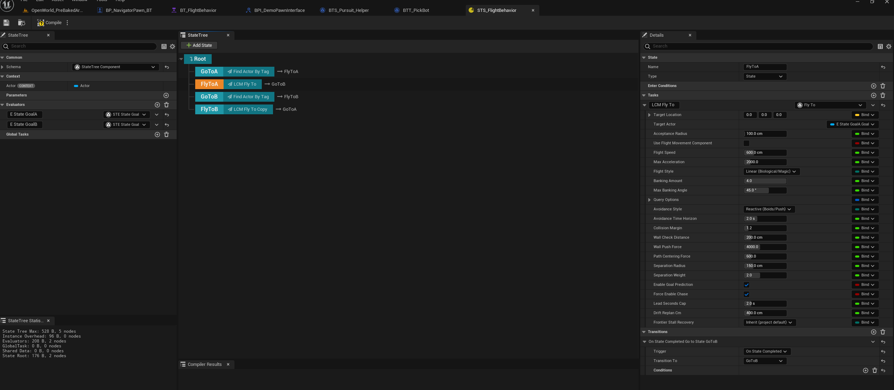
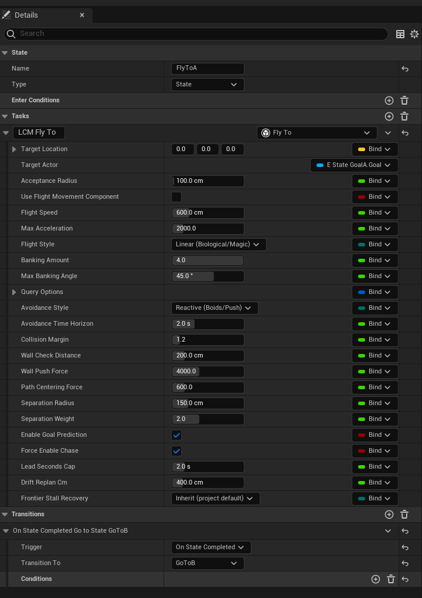

Tutorial 04: The Same Agent in StateTree
TL;DR: Identical flight behaviour to Tutorial 03, authored in
StateTree instead of a Behavior Tree. Swap the AIController's
RunBehaviorTree for a
StateTreeAIComponent, and bind the
Fly To task's TargetLocation instead of a
blackboard key.
Time: ~15 minutes. Do Tutorial 03 first. This chapter only covers the differences.
Should you use StateTree or Behavior Tree?
Both are fully supported and produce the same flight. Pick on authoring preference, not capability.
| Behavior Tree | StateTree | |
|---|---|---|
| Goal comes from | A blackboard key | Bound instance data on the task |
| Best at | Reactive priority ordering | Explicit states and transitions |
| Maturity | Stable | Epic's StateTree plugin is experimental on 5.2, stable from 5.3 |
The 5.2 caveat. The plugin is flagged beta on 5.2 only because Epic's StateTree plugin is experimental there. If you're shipping on 5.2 and want the most conservative option, use the Behavior Tree path. On 5.3+ this distinction disappears.
Step 1: The pawn
Exactly as Tutorial 03 Step 2: a Pawn with Floating Pawn Movement, a visible mesh, and Auto Possess AI = Placed in World or Spawned.
Nothing StateTree-specific here.
Step 2: Create the StateTree asset
- Content Browser → Add → Artificial Intelligence → StateTree.
- When it asks for a schema, choose StateTree AI Component Schema. This matters: the AI schema is what exposes the AI context (controller and pawn) the Fly To task needs.
- Name it
ST_MyFlyer.
Step 3: Add the Fly To task
- Open
ST_MyFlyer. You'll have a Root state. - Add a child state and name it
FlyToGoal. - With that state selected, in the Tasks section click + and choose Fly To (listed under the LCM Nav3D category).
- Set the task's properties:
| Field | Value | Notes |
|---|---|---|
| Target Location | your goal | See binding below |
| Acceptance Radius | 100 |
|
| Flight Speed | 600 |
Match your Floating Pawn Movement Max Speed |
Binding the goal
This is the structural difference from Behavior Trees.
There's no blackboard; you bind the task's Target Location
to a value.
The simplest approach is a StateTree parameter:
- Select the Root state → in
Parameters, add a parameter: Name
GoalLocation, TypeVector. - Select the Fly To task → click the bind icon next
to Target Location → choose
GoalLocation.
Now anything that sets that parameter drives the agent.
Chasing instead. The task also has a
Target Actorfield. Set or bind that and the agent chases the actor, using the same prediction logic as the BT version. Note the ST chase path requiresTarget Actorto be non-null. If you want a fixed point, useTarget Location.
Why
Fly To has its own Target Actor field
This trips up everyone arriving from Behavior Trees, so it is worth
stating plainly: that field is not an alternative to
Find Actor By Tag - it is what
Find Actor By Tag plugs into.
A Behavior Tree has a blackboard, so a BT task can name a key and
read whatever wrote it. StateTree has no blackboard. Data moves by
property binding from one node's output to another
node's input, which means the consuming node must declare a
field to receive the value. Delete Target Actor and there
is nothing left to bind to.
This is the engine's own convention, not a plugin invention. Epic's
Move To task carries exactly the same pair - a
Destination vector plus an optional
Target Actor, with the actor winning when both are set.
Fly To needs the live actor rather than a resolved
position because it re-samples the target's location and
velocity every tick to fly a lead intercept. A one-shot position
would send the agent to where the target was when the state began.
Resolve the actor with the evaluator, not the task
Two nodes resolve a tag. Pick by whether you want a snapshot or a live reference:
| Find Actor By Tag (task) | Find Actor By Tag (evaluator) | |
|---|---|---|
| Resolves | Once, on state entry | Continuously, on Refresh Interval |
Found Actor Location |
Frozen at entry | Refreshed every tick |
| Target destroyed / respawns | Stays stale until re-entry | Re-resolves immediately |
| Costs a state | Yes - unless Stay Running After Resolve lets it share
one |
No |
| Visible to | Nodes ordered after it | The whole subtree of the state it sits on |
| Can fail a state | Yes (returns Failed) |
No - gate on its b Found Actor output |
Prefer the evaluator for goal sources. Put it on the
parent state, set Tag to Player, and bind
Fly To's Target Actor to its
Found Actor. One resolver then feeds Fly To,
Look At, conditions and transitions at once, and it stays
correct when the target dies or streams in late.
Only the search is throttled by
Refresh Interval (0.5 s by default); the location output
refreshes every tick off the cached pointer, so a moving target is never
stale. Reach for the task form when a frozen-on-entry snapshot is the
point - picking a patrol anchor and committing to it - or when you
specifically want the state to fail if nothing carries the
tag.
Roaming between tagged goals. The task form also has
Pick Random Match: tag every goal actor in the level (say,Goal), put the task ahead of Fly To in one state, and tickStay Running After Resolve- this switch is what lets the two tasks share a state. Off, the resolve finishes on entry, and a task that finishes finishes its whole state: Fly To is entered but never ticked, and the agent stands still. Bind Fly To'sTarget LocationtoFound Actor Location, then add an On State Completed transition back into the same state - as a Go to State transition targeting the state itself, not Tree Succeeded, which would end the whole run after the first leg. Each re-entry draws a fresh random goal -Avoid Repeat Pick(on by default) guarantees it is never the goal the agent is already sitting on - and every agent runs its own tree instance, so a crowd sharing one StateTree asset spreads across the goal set by itself. This is the tagged-actor twin of the Pick Random Goal task, which does the same loop with random points instead of placed actors and carries the sameStay Running After Resolveswitch for the same reason.

Figure 04.1 - A two-goal patrol, the StateTree way.
This is the shipped STS_FlightBehavior. Each
FlyTo* state runs one LCM Fly To task and
transitions On State Completed to the next, so the
patrol loop is expressed as states and transitions rather than as a
Behavior Tree Loop decorator. The Find Actor By Tag states
in between are what fill in each goal at runtime.
Note the Evaluators in the left panel -
E State GoalA and E State GoalB. That is the
StateTree replacement for a blackboard: an evaluator produces a value,
and the task binds to it.

Figure 04.2 - The same task, in StateTree form. The properties are the ones you already met in Tutorial 03 - the difference is the Bind column down the right-hand edge. In StateTree every field can be driven by an evaluator, a parameter or another state's output, not just the goal.
In this shot Target Actor is bound to
E State GoalA.Goal while everything else holds a literal,
which is the normal arrangement: bind what changes, type what does
not.
Frontier Stall RecoveryreadsInherit (project default)here, and the task cannot tell you what that resolves to. A StateTree asset is not owned by a level, so it does not know which manager it will run under. The manager's 7. Runtime State ▸ Frontier Stall Recovery (auto) row is the one place that answer exists.
Step 4: The AI Controller
Create an AIController Blueprint,
BP_MyFlyerAI_ST.Add a StateTree AI Component.
Select it and set State Tree to
ST_MyFlyer.Set the goal parameter on BeginPlay. On the component, use Set Parameter (or set the value before the tree starts) with:
- Name:
GoalLocation - Value: e.g.
GetActorOfClass(TargetPoint) → GetActorLocation
- Name:
On
BP_MyFlyer→ Class Defaults → AI Controller Class =BP_MyFlyerAI_ST.
Unlike the BT path there is no
Run Behavior Treecall: theStateTreeAIComponentstarts the tree itself.
Step 5: Fly
Place a TargetPoint and your pawn, press Play. Same result as Tutorial 03: the pawn routes through 3D space to the goal.
The rest of the StateTree surface
The plugin ships a full StateTree task set, all under the LCM Nav3D category:
| Task | Does |
|---|---|
| Fly To | The flagship: 3D navigation to a point or actor |
| Patrol | Cycle through a set of points |
| Orbit Target | Circle a target at a radius |
| Land | Descend and touch down |
| Look At / Turn In Place | Orientation without translation |
| Find Cover | Move to tactical cover |
| Evade CBS | Avoidance-driven evasion |
| Follow Flow Field | Follow a shared crowd steering field |
| Chunk Prewarm / Streaming Aware | Infinite-world streaming helpers |
| Find Actor By Tag / Pick Random Goal / Wait | Utility |
| Use Smart Object | Smart Object interaction |
Plus conditions (Path Exists,
Is At Location, Chunk Loaded,
Has Line Of Sight, Is In Cover,
Health Below, Path Length Below,
Threat Visible Via Perception) and evaluators
(Path Status, Path Progress,
Navigation Load, Threat Field,
Squad, Memory, Perception Relay,
Find Actor By Tag).
Reading a node's outputs. Fields a node produces are grouped under an Output section and drawn as read-only
OUTpins - those are the ones you bind from. Everything else is a parameter you either type a value into or bind to.
Every one is listed with its full property set in the API Reference.
Behaviour differences worth knowing
The BT and ST Fly To tasks are built for parity, but a few things genuinely differ:
| Behavior Tree | StateTree | |
|---|---|---|
| Goal source | Blackboard key (Vector or Actor) | Target Location or
Target Actor instance data |
| Chase | Works with a Vector or Actor key | Requires a non-null Target Actor |
| Arrival reported | Against the pre-move location that frame | Against the post-move location |
The arrival difference is a sub-frame detail: it only matters if
you're comparing the two side-by-side with a very small
Acceptance Radius.
Troubleshooting
| Symptom | Cause |
|---|---|
| Fly To isn't in the task list | Asset wasn't created with the StateTree AI Component Schema |
| Task fails immediately | No LcmNavigationManagerSVO in the level, or the goal is
outside/inside geometry |
| Agent never starts | StateTreeAIComponent has no State Tree
assigned, or Auto Possess AI is off |
| Goal is always (0,0,0) | The parameter isn't bound, or is set after the tree already ran |
More: Troubleshooting.
Next: Tutorial 05: Dynamic Obstacles. Make the world move and watch agents reroute.